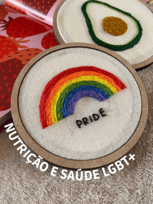

Oi, prazer! Eu sou a Bela, nutricionista comportamental
Eu acredito que nossa relação
com a comida conta muito sobre
quem somos e como nos sentimos.
Depois de anos lutando com dietas e frustrações, descobri que
a chave para uma vida saudável não está em restrições, mas
em entender nossos hábitos e ouvir nosso corpo. Foi essa
mudança que transformou minha vida e me inspirou a seguir a
Nutrição para ajudar pessoas como você a encontrar equilíbrio
sem abrir mão do prazer de comer.
Vamos juntas? Veja como posso te ajudar a transformar sua relação
com a comida!

